Illustrative AI image · A piano facing the seadoucement
Before we begin
How to read a composer who distrusted explanations
CClaude Debussy (1862–1918) is usually filed under one word: Impressionist. This magazine sets that word aside for a while. Its story follows him chapter by chapter — from a combative Conservatoire student to a dying man writing sonatas in wartime — and watches one idea take shape across his whole life: that musical coherence does not have to mean a harmony travelling home.
Each chapter begins with the story, told plainly. That is the surface. Then come four deeper layers, borrowed from a method of deep pattern discovery: the structural layer (what mechanisms produce the facts), the systemic layer (what larger systems and feedback loops are involved), the symbolic layer (what older human pattern the episode resembles, and what its titles and images might mean), and the meta layer (why we ask the question at all). A recursive challenge then asks what would have to be true for the reading to be wrong — and what larger frame could hold both the reading and its opposite.
Because pattern-hunting can easily slide into fantasy, every interpretive claim carries a marker. Observation means documented fact. Inference means a reasoned reading of the facts. Hypothesis means a proposal that could be tested. Speculation means a cross-domain parallel with no claim of influence. Imagination means a deliberately playful image offered to help you listen.
Each movement opens like a page of one of his scores, with a tempo marking in French — where possible, the very marking Debussy wrote at the head of that chapter’s key work — and, in homage to his Préludes, it closes with its title printed at the end.
The governing question, which Debussy himself seems to pose, returns in every chapter: what happens when we stop asking where the music is going, and start asking what the sound is doing now — and how its memory changes what comes next?
Debussy did not abolish tonality or form. He recomposed them — and in doing so, recomposed what it means to listen.
Une vie en douze mouvements
A life in twelve movements
Debussy’s path runs from Saint-Germain-en-Laye and Paris through the travelling Russian household of Nadezhda von Meck, the Villa Medici in Rome, Wagner’s Bayreuth and the 1889 Paris World’s Fair; then to the Burgundy countryside where La Mer was begun, the English seaside at Eastbourne where he corrected its proofs, and finally the Normandy coast at Pourville, where the 1915 burst of late works began. The chapters follow that path in time order — jump to any of them here.
Before the long story, a door you can walk straight through. These are the pieces most people meet first — the ones that made Debussy loved before he was understood. Each card says what to listen for, and adds one small deep-pattern reading.
The last two share a dance with a complicated history, so read their notes as well as listening to them.
01
Claude Debussy1888–1891Direct connection
Arabesque No. 1 in E major (1888–1891)
Listen for the flowing triplet lines that curl around each other like vines, and for how the melody is never quite separate from its decoration. In his later criticism Debussy praised the ‘arabesque’ — the free ornamental line he heard in Bach and in early church music. Inference Here, at twenty-six, the line already matters more than the chord progression beneath it — the same whiplash curve that Art Nouveau was about to draw across Paris.
One of the Deux Arabesques, L. 66, among Debussy’s earliest published piano works.
02
Claude Debussyc. 1890Direct connection
Rêverie (c. 1890)
A gentle melody floats over a rocking accompaniment, then returns in octaves as if remembered more brightly. When a publisher brought it out years later, Debussy protested that he had written it hastily, for money, and thought it of no value. Observation One of his most-loved pieces is one he disowned. Inference Creators and audiences value work by different measures: he judged it by what it added to his language; listeners by how directly it reaches them.
Piano piece L. 68; Debussy later objected to its publication.
03
Claude Debussyc. 1890, published 1905Direct connection
Suite bergamasque: III. Clair de lune (Moonlight)
Begun around 1890 and revised before publication in 1905, it takes its title from a Verlaine poem about masked figures singing in the moonlight; the movement is reported to have once been called ‘Promenade sentimentale’. Listen to how the opening chords seem to hang in the air without a firm beat, and how the middle section starts to ripple like light on water. Inference It is the gentlest doorway into Debussy’s idea of form as resonance: almost nothing ‘happens’, yet everything moves.
The title comes from Paul Verlaine’s poem ‘Clair de lune’ (Fêtes galantes); the suite was begun around 1890.
04
Claude Debussy1909–1910Direct connection
Préludes, Book I: La fille aux cheveux de lin (The girl with the flaxen hair, 1910)
A simple, folk-like melody built largely from the five notes of a pentatonic scale, with soft, warm chords and no drama at all. Observation Debussy had set the same poem as a teenager. Inference Nearly thirty years later the title returns, not as a song but as a memory without words — a small instance of the recollection that runs through all his work.
Prelude No. 8 of Book I; the title comes from a poem by Leconte de Lisle that Debussy had already set as a song in his youth.
05
Claude Debussy1910Direct connection
La plus que lente (Slower than slow, 1910)
A slow waltz that keeps stretching, hesitating and sighing — a gentle parody of the sentimental ‘valse lente’ played in Paris hotels and cafés. Debussy reportedly made a version for the violinist of a fashionable hotel orchestra. Inference It is affectionate satire: he loves the café waltz enough to imitate it, and is free enough to slow it down until it starts to dream.
Valse, L. 121, published in 1910; Debussy also arranged it for a small café-style orchestra.
06
Claude Debussy1909Direct connection
A cakewalk for young pianists (1909), published as Le petit nègre, L. 114
Under two minutes of bouncing syncopation and cheeky stops, written as an easy piece for students — the cousin of Golliwogg’s Cake-walk. Listen for the off-beat ‘skip’ in the right hand against a steady, marching left hand. Observation The cakewalk began among enslaved African Americans as a dance that mocked the stiff ballroom manners of plantation owners, before minstrel shows and then Paris turned it into a craze. Inference A dance born as parody of power, borrowed by a composer who loved to parody Wagner: a satire inside a satire, carrying a history its Parisian fans rarely saw.
Written in 1909 for Théodore Lack’s elementary piano method; the original title appears in the recording’s name below.
A note on the title Debussy’s title uses a French racial term that was common in 1909 and is demeaning today. We name it only so the piece can be found, and call it here ‘the 1909 cakewalk’. Enjoying its rhythm and naming its history are not in conflict — both are part of listening honestly.
07
Claude Debussy, at the piano1913Direct connection
Golliwogg’s Cake-walk — played by Debussy himself (1913 piano roll)
This is as close as we can come to hearing Debussy play: a reproducing-piano roll he recorded himself. Notice how free and springy his rhythm is, how lightly he takes the Tristan joke in the middle, and how little he lingers. Inference The composer’s own performance is less ‘misty’ and more witty than many modern ones — a weak signal worth trusting over the cliché.
Debussy recorded piano rolls of his own music for the Welte-Mignon company in Paris in 1913, including Children’s Corner; this is a playback of that roll.
A note on the title The title refers to the ‘golliwog’, a doll character rooted in racist blackface imagery; see the note in Movement VIII. No such imagery appears on this page.
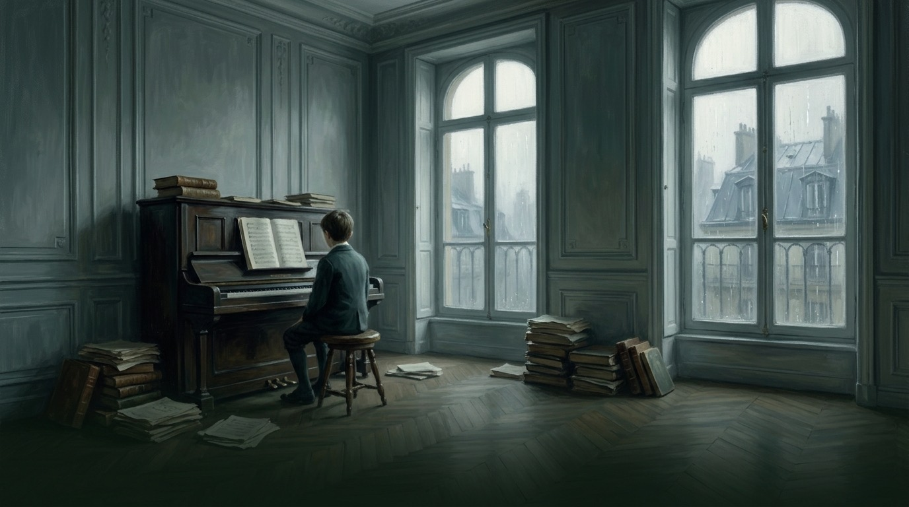
Illustrative AI image · A Conservatoire practice room
I
Mouvement I · 1862–1887
Learning the Rules in Order to Choose Which to Break
A gifted outsider masters the system that distrusts him
Tempo marking: Modéré, sans lourdeur
Covers: childhood, the Paris Conservatoire (1872–1884), the Prix de Rome and the Villa Medici years (1885–1887)
AAchille-Claude Debussy was born on 22 August 1862 in Saint-Germain-en-Laye, outside Paris, into a family with little money and less stability. His father’s working life was a string of failed ventures, and after the Paris Commune of 1871 he was imprisoned. The boy received almost no ordinary schooling. What he did receive were piano lessons from Madame Mauté, the mother-in-law of the poet Paul Verlaine, and she prepared him well enough that in 1872, aged ten, he entered the Paris Conservatoire.
The Conservatoire recognised the talent and resented the ear. Teachers complained about chord successions that broke the textbook rules; Debussy, for his part, liked to linger over unresolved chords simply for the pleasure of their sound. Yet he did the work. He learned harmony, counterpoint and the official cantata style thoroughly — so thoroughly that in 1884 his cantata L’Enfant prodigue (The Prodigal Son) won the Prix de Rome, France’s most prestigious prize for young composers.
The prize sent him to the Villa Medici in Rome, and there the paradox became sharp. Success had bought him a residence he experienced as a cage. He missed Paris, struggled to write what the Académie expected, and sent home pieces its judges found strange. Their 1887 report on his orchestral Printemps warned him against a ‘vague impressionism’ — the first time that fateful word was attached to his music, and it arrived as a reprimand. He left Rome early and went back to Paris, to its cafés, its poets and its poverty.
Freedom, for Debussy, was not the absence of craft. It was craft made voluntary.
In art: Marcel Baschet, Portrait of Claude Debussy (1884)
Marcel Baschet, Portrait of Claude Debussy (1884), Musée d’Orsay, Paris
Baschet, a fellow Prix de Rome laureate, painted the young composer during the Rome years. He chose a tight, dark, almost severe portrait: a heavy brow and an inward gaze rather than the confident air of an official prizewinner. Read beside this chapter, it catches the moment between institutional triumph and inner restlessness. It also shows the polished academic portrait tradition of its era — exactly the rule-based training from which both painter and sitter had emerged.
L’Enfant prodigue — Air de Lia, ‘L’année en vain chasse l’année’ (1884)
Lia’s aria is a mother’s lament for her lost son, written to satisfy a jury. Listen for the conventional operatic shape — a recitative, then a lyrical aria with clear cadences — and for the moments where the harmony drifts toward colours the rules did not require. It is the sound of a student proving he can speak the official language fluently.
This is the Prix de Rome cantata discussed in this chapter.
Title, printed at the end: (…L’Enfant prodigue)
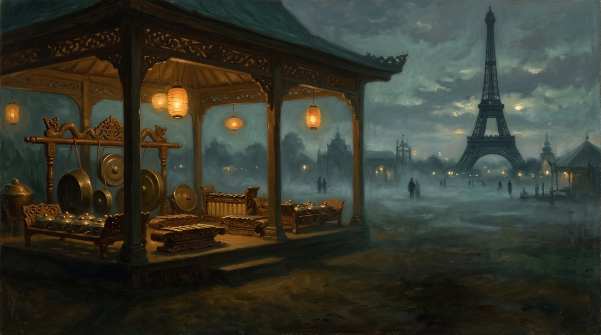
Illustrative AI image · An imagined 1889 fair pavilion
II
Mouvement II · 1880–1889
Three Foreign Voices: Russia, Bayreuth and the Gamelan
Each outside influence answers a different problem
Tempo marking: Animé, comme un lointain
Covers: the von Meck household (from 1880), Bayreuth (1888 and 1889) and the Paris Exposition Universelle (1889)
EEven before Rome, a teenage Debussy had glimpsed a wider world. From 1880 he spent summers as house pianist to Nadezhda von Meck, the wealthy Russian patron best known for supporting Tchaikovsky. He travelled with her household through France, Italy and Russia, played duets with the family, and heard Russian music that obeyed different instincts from the Conservatoire’s: modal colours, repetition, chords chosen for their sound rather than their duty.
Back in Paris after Rome, he made a kind of pilgrimage. In 1888 and again in 1889 he travelled to Bayreuth, Richard Wagner’s festival theatre, and heard the music dramas that had overwhelmed a generation of French artists. Debussy was overwhelmed too. Wagner’s chromatic harmony and his web of recurring motives seemed to be the future of music — and that was exactly the problem. If Wagner was the future, what was left to do?
The answer came in 1889 from an unexpected direction. At the Paris Exposition Universelle, the world’s fair built around the brand-new Eiffel Tower, the colonial exhibits included a reconstructed Javanese village with musicians and dancers. Debussy heard the gamelan, an ensemble of tuned gongs and metallophones whose layered, cycling patterns had nothing to do with European chords marching toward a tonic. Six years later he reminded his friend Pierre Louÿs of that music: it could express every shade of meaning, he wrote, and next to it the Western tonic and dominant seemed like empty phantoms for foolish children.
In art: Exposition universelle — Les danseuses javanaises (1889)
Hippolyte Blancard (photograph) after an engraving signed Émile Bayard, ‘Exposition universelle — Les danseuses javanaises’, c. 1889, Musée Carnavalet, Paris
This illustration, made for Parisian readers of the 1889 fair, shows the Javanese dancers who performed with the gamelan musicians Debussy heard; the musicians sit at the left behind their kettle gongs. The artist chose the swirling sashes, headdresses and graceful poses that most struck European visitors — spectacle framed for a souvenir. Beside this chapter, it reminds us that Debussy’s encounter came through a staged, colonial lens. It also reveals its era’s appetite for displaying other cultures as attractions.
Written fourteen years after the fair, Pagodes layers a slow pentatonic melody over repeated bell-like figures and sustained bass ‘gongs’. Notice how little the harmony seems to travel: the interest lies in the shimmer of the layers, as if several clocks were ticking at different speeds.
Widely discussed in Debussy scholarship as his most explicit gamelan-derived piece (pentatonic layers, bell-like ostinatos, gong-like bass).
Javanese gamelan (traditional)Editorial resonance
Singa Nebah (The Pouncing Lion), pélog barang
An editorial pairing: a university gamelan ensemble performing a Javanese piece, offered so you can hear the layering principle for yourself — a slow core melody, faster elaborating parts and periodic gong strokes marking the cycle. It is not what Debussy heard in 1889, and it should not be taken as a reconstruction of that performance.
Title, printed at the end: (…Pagodes)
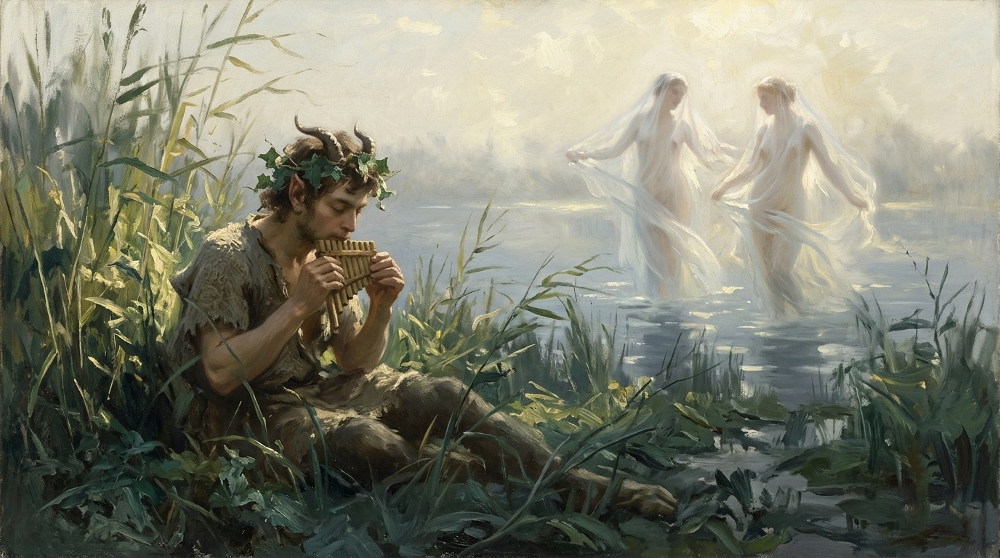
Illustrative AI image · The faun among the reeds
III
Mouvement III · 1890–1894
An Afternoon That Never Ends
A flute line opens the door to modern music
Tempo marking: Très modéré
Covers: Suite bergamasque (begun 1890), the String Quartet (1893) and Prélude à l’après-midi d’un faune (premiered 22 December 1894)
IIn the early 1890s Debussy was poor, little known outside a small circle, and living among poets. He attended the Tuesday gatherings of Stéphane Mallarmé, the Symbolist poet whose verse seemed to dissolve meaning even as it created it. Mallarmé’s L’Après-midi d’un faune (1876) is a long dreaming monologue: a faun wakes on a hot Sicilian afternoon and tries to remember whether he really embraced two nymphs, or only dreamed it.
Debussy did not set the poem to music or tell its story. He wrote a short orchestral prelude to its atmosphere. It begins with a solo flute, alone, sliding down from C-sharp to G and back — the span of a tritone, an interval that hovers between keys instead of announcing one. Harps, muted horns and divided strings answer softly. No big theme is stated and then developed; the flute’s idea simply returns, again and again, each time in a new harmonic light, a new instrument, a new register, like a memory that changes every time it is recalled.
The same years produced a String Quartet (1893), whose themes transform across all four movements, and the piano Suite bergamasque, whose Clair de lune takes its title from a Verlaine poem. When the Faune was first played in Paris on 22 December 1894, the audience asked to hear it again on the spot. Decades later the composer Pierre Boulez wrote that modern music was awakened by this piece.
In art: Édouard Manet, vignettes for Mallarmé’s L’Après-midi d’un faune (1876)
Édouard Manet, wood-engraved vignettes for Mallarmé’s L’Après-midi d’un faune (1876), Bibliothèque nationale de France
For the poem’s first edition, Manet made tiny vignettes: nymphs among reeds, a cluster of grapes, the faun stretched out in the grass. He chose quick, open lines that suggest more than they define — far closer to Mallarmé’s method than a detailed academic illustration would have been. Beside Debussy’s prelude, they show that the poem had already been translated once into another medium by an artist who preferred suggestion. They also reveal the 1870s Parisian alliance between avant-garde painters and poets that Debussy would later join.
Listen to the first thirty seconds: the solo flute’s sliding descent, then a soft harp glissando and a muted horn call. Then count how many times the flute idea returns, and notice how each return sounds different — new chords, a new instrument, a new register. That changing recurrence is the form.
The title and the composer’s own description present it as a prelude after Mallarmé’s poem.
Claude DebussyDirect connection
String Quartet in G minor, Op. 10 (1893)
The quartet builds all four movements from transformations of its opening motif — the same principle as the Faune inside a classical frame: development by metamorphosis rather than by argument. In the second movement the strings pluck a busy, ringing texture that many listeners hear as an echo of the gamelan.
Composed in 1893, in the same years as the Faune.
Title, printed at the end: (…Prélude à l’après-midi d’un faune)
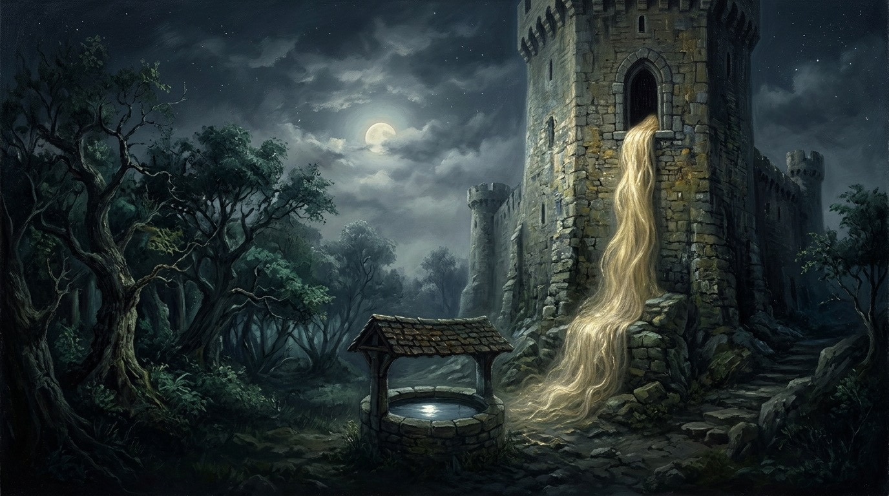
Illustrative AI image · Mélisande’s tower
IV
Mouvement IV · 1893–1902
The Opera That Whispers
Ten years on a drama of silences
Tempo marking: Très calme et doux
Covers: the composition of Pelléas et Mélisande (1893–1902) and its premiere at the Opéra-Comique, 30 April 1902
IIn 1893 Debussy saw Maurice Maeterlinck’s Symbolist play Pelléas et Mélisande and knew he had found his opera. The story is simple and never explained. Prince Golaud, lost while hunting in a forest, finds a weeping young woman beside a spring. Her name is Mélisande, and she will not say where she comes from. He marries her and brings her to the gloomy castle of Allemonde, where she and Golaud’s younger half-brother, Pelléas, slowly fall in love.
Almost nothing is said directly. Mélisande lets her wedding ring slip into a deep fountain at the very hour Golaud falls from his horse. In the most famous scene she leans from a tower window combing her hair; it tumbles down over Pelléas, who wraps himself in it, until Golaud surprises them. Jealousy grows through half-heard conversations, in darkness, in caves by the sea. Golaud kills Pelléas; Mélisande dies after giving birth, and the opera ends without anyone learning the truth.
Debussy set Maeterlinck’s text almost word for word, with voices that follow the rhythms of spoken French instead of soaring into arias. He worked on it for nearly a decade. By the time it reached the Opéra-Comique on 30 April 1902, with the Scottish soprano Mary Garden as Mélisande, Maeterlinck had publicly turned against the production because another singer had been cast. During rehearsals Debussy had to extend the orchestral interludes to cover the scene changes. Critics argued in more than a hundred reviews; young listeners came back night after night.
In the archive: Mary Garden as Mélisande
Mary Garden as Mélisande in Debussy’s Pelléas et Mélisande, photograph, early 1900s, Library of Congress (restored file)
Garden created the role in 1902, and photographs like this fixed Mélisande’s image for a generation. The photographer chose to show her turned away, leaning over a stone rim as if gazing into the fountain, her long braid falling down her back — no face-on portrait, no direct gaze. Beside this chapter it captures the opera’s inwardness: a heroine seen but never fully known. It also shows how early twentieth-century theatre photography turned singers into icons of a role.
In art: Georges Rochegrosse, poster for Pelléas et Mélisande (1902)
Georges Rochegrosse, poster for the premiere of Pelléas et Mélisande (1902), Bibliothèque nationale de France
Rochegrosse chose the opera’s one moment of open passion — the lovers’ embrace by the fountain — and placed Golaud in the corner, sword drawn, watching. A poster has to sell a story, so it makes explicit what Debussy’s music keeps veiled. That contrast is instructive: the image shows the melodrama the opera could have been, and the score shows what Debussy chose instead. It also reflects the lush, theatrical academic style of Paris posters around 1900.
Pelléas et Mélisande, Act III: ‘Mes longs cheveux descendent’
This is the beginning of the tower scene. Mélisande sings alone, at first without accompaniment, a simple modal melody that sounds older than the opera around it. Notice how little operatic display there is: it is almost a folk song sung to herself, as if no one were listening. That intimacy is the drama.
Mélisande’s song at the tower window, which opens Act III of the opera.
Title, printed at the end: (…Pelléas et Mélisande)
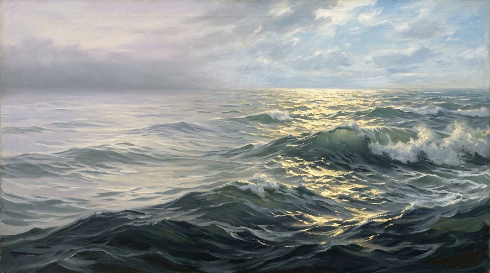
Illustrative AI image · From dawn to noon on the sea
V
Mouvement V · 1903–1905
The Sea Without a Picture
Three symphonic sketches built from memory, not observation
Tempo marking: Très lent
Covers: La Mer, composed 1903–1905 and premiered in Paris on 15 October 1905
DDebussy began La Mer in the summer of 1903 far from any coast, in the Burgundy countryside. He wrote to the conductor André Messager that he had once been destined for the life of a sailor, and that he kept an endless store of memories of the sea — memories worth more to him than the reality, whose beauty tends to deaden thought. The sea he composed was remembered, not observed.
The work has three movements: ‘From dawn to noon on the sea’, ‘Play of the waves’ and ‘Dialogue of the wind and the sea’. The first does not follow a textbook sonata plan but grows through successive zones: small motivic cells appear, dissolve and return, and the sense of direction comes from changing density, colour and register. In the second, tiny gestures flicker between instrumental groups and vanish, like light on moving water. In the finale, wind and sea become two musical forces pressing against each other, and themes from the first movement return to bind the whole.
During these years Debussy’s private life broke apart — a story for a later chapter — and in the summer of 1905 he corrected the proofs at the Grand Hotel in Eastbourne, on the English coast. The first edition, published by Durand, carried on its cover the crest of Hokusai’s Great Wave off Kanagawa. The premiere on 15 October 1905 puzzled many critics, who had wanted the sea to sound more like the sea.
In art: Katsushika Hokusai, Under the Wave off Kanagawa (c. 1830–32)
Katsushika Hokusai, Under the Wave off Kanagawa (The Great Wave), c. 1830–32, Metropolitan Museum of Art, New York
Hokusai chose an extreme, cropped viewpoint: a towering wave curls like a claw over three fragile boats, while Mount Fuji sits small and still in the distance. Debussy owned Japanese prints, and a print of this wave can be seen on his study wall in the photograph that closes this magazine. Beside this chapter, it is less a picture of the music than a parallel method — asymmetry, energy and tiny detail inside a vast field. It also reveals the Japonisme that swept Paris in Debussy’s time and reshaped European ideas of composition.
In print: the first edition of La Mer (Durand, 1905)
Cover of the first edition of Claude Debussy, La Mer (A. Durand & Fils, 1905), Bibliothèque nationale de France
The 1905 cover isolates the crest of Hokusai’s wave and strips away the boats and Mount Fuji, leaving pure energy on a plain ground. That editorial choice framed the score for its first readers: not a seascape with people in it, but a force. It is evidence of how the work was presented at its birth — and of how freely Paris absorbed Japanese design around 1900.
Try three listenings with three different questions: first, follow the tonal centres; second, ignore harmony and track only changes of instrument and register; third, mark every return of a motive. The three maps will rarely coincide — Debussy’s form lives in their interaction. In the first movement, listen especially for the slow build from murky low strings to the brass chorale at the end: a ‘noon’ that arrives as a blaze of colour rather than a cadence.
The work discussed in this chapter.
Title, printed at the end: (…La Mer)
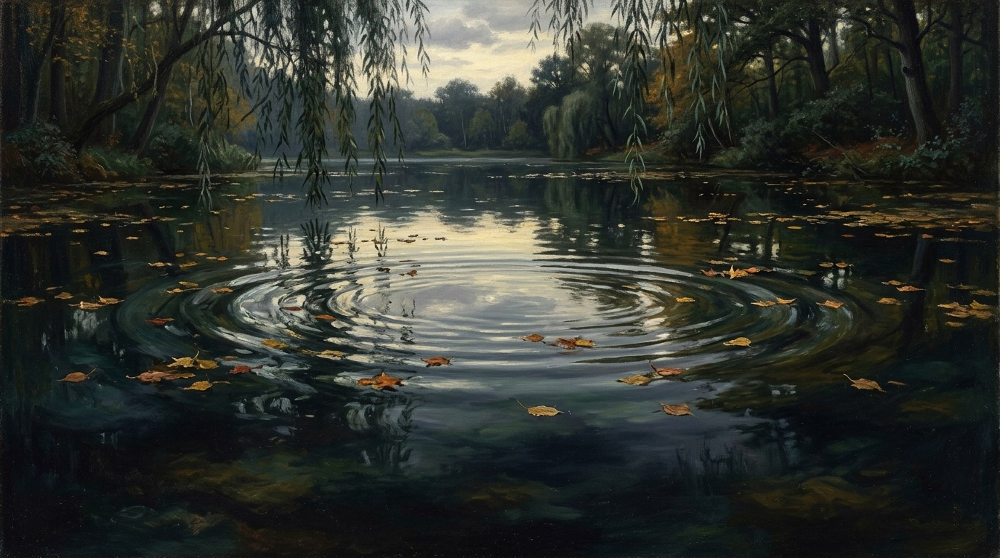
Illustrative AI image · Reflections in the water
VI
Mouvement VI · 1903–1912
When Sound Becomes Form
Prints, reflections and an imagined Spain
Tempo marking: Andantino molto (tempo rubato)
Covers: Estampes (1903), the piano Images Books I and II (1905, 1907) and the orchestral Images (1905–1912), including Ibéria
IIn the same years as La Mer, Debussy reinvented the piano. Estampes (Prints, 1903) offered three postcards from imagined journeys: Asia in Pagodes, Spain in La soirée dans Grenade, and a French garden in a rainstorm. Then came two books of piano Images. The first piece, Reflets dans l’eau (Reflections in the water), opens with a few soft chords whose echoes seem to spread in rings; as it unfolds, melody and accompaniment become hard to tell apart, like an object and its reflection on a moving surface.
He also began a set of orchestral Images: Gigues, Ibéria and Rondes de printemps. They took him seven years. Ibéria conjures Spain in three scenes — streets and roads, the perfumes of the night, a festival morning — though Debussy spent only a few hours across the Spanish border in his whole life. The Spanish composer Manuel de Falla nevertheless praised its truthfulness, writing that it captured the intoxicating spell of Andalusian nights.
Debussy cared intensely about how these pieces should sound. His manuscripts mark articulation, pedal, tempo and nuance with extraordinary precision. In 1907 he described the orchestral Images in a letter as something ‘immaterial’, which could not be handled like a robust symphony.
programme
Listening
Claude DebussyDirect connection
Images, Book I: Reflets dans l’eau (1905)
Listen to the first few chords and to how the pedal lets their echoes overlap. Then notice the moments where a melody seems to rise out of the reflections and sink back into them. There is a climax, but it arrives as an expansion of resonance rather than as a dramatic arrival.
The piece discussed in this chapter.
Claude DebussyDirect connection
Images for orchestra: II. Ibéria (1905–1908)
The middle part, Les parfums de la nuit, glides almost without a seam into the festival morning of the third — one of the most magical transitions in orchestral music. Listen for distant bells, castanets and solo woodwinds: Spain as a set of rhythmic and timbral signs, transformed rather than transcribed.
The work discussed in this chapter.
Title, printed at the end: (…Reflets dans l’eau)
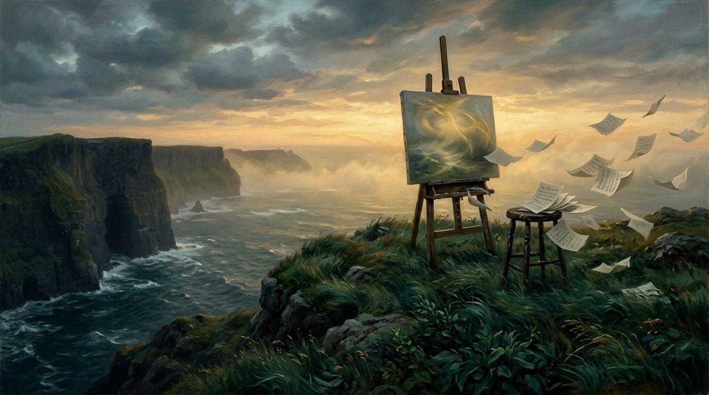
Illustrative AI image · An easel facing the fog
VII
Mouvement VII · 1897–1908
Against a Label
Symbolism, Turner and the word Debussy never accepted
Tempo marking: Modéré
Covers: the orchestral Nocturnes (1897–1899), Debussy’s criticism as ‘Monsieur Croche’ (from 1901) and his March 1908 letter to Jacques Durand
BBy the early 1900s critics had a word for Debussy, and he disliked it intensely. The word was Impressionism, borrowed from the painters around Claude Monet, whose 1872 harbour scene Impression, soleil levant had accidentally given their movement its name. Music that blurred outlines, the critics reasoned, must be doing what Monet did with broken brushstrokes and changing light.
Debussy pushed back. In March 1908 he wrote to his publisher Jacques Durand that he was trying to make something different — ‘realities’, as he put it — which fools called Impressionism, a term used as badly as possible, especially by art critics who applied it even to Turner, ‘the finest creator of mystery in art’. He also wrote criticism under the mask of an imaginary, grumpy character called Monsieur Croche, insisting that music begins where words become powerless, and that it should explore the mysterious correspondences between nature and imagination rather than copy nature.
His orchestral Nocturnes (1897–1899) show what he meant. The title, he explained, was to be taken in a general, decorative sense, not as night music. The first piece, Nuages (Clouds), presents the unchanging look of the sky and the slow, solemn movement of clouds dissolving into grey. There is no story and no weather report — only a slowly turning field of sound in which a cor anglais motif drifts past like something seen and almost forgotten.
In art: J. M. W. Turner, Snow Storm – Steam-Boat off a Harbour’s Mouth (exhibited 1842)
J. M. W. Turner, Snow Storm – Steam-Boat off a Harbour’s Mouth (exhibited 1842), Tate, London
Turner chose to show almost nothing clearly: a dark mast and the smudge of a steamer engulfed in a vortex of snow, sea and smoke. Debussy named Turner in his 1908 letter as ‘the finest creator of mystery in art’, so this pairing rests on his own words — though he did not cite this particular canvas. Beside this chapter, it shows the mystery he valued: an object inseparable from its atmosphere. It also reveals how far Romantic painting had travelled toward abstraction decades before Impressionism.
In art: Claude Monet, Impression, soleil levant (1872)
Claude Monet, Impression, soleil levant (1872), Musée Marmottan Monet, Paris
Monet painted the harbour of Le Havre at sunrise in quick strokes, letting an orange sun and blue haze stand in for boats and cranes. A critic mocked the title, and the name ‘Impressionists’ stuck to the whole group. Placed here, it shows where the label that followed Debussy came from: a painting made in front of its subject, catching a fleeting moment. It also reminds us that ‘Impressionism’ itself began as an insult — like the Académie’s reprimand of Debussy in 1887.
Listen for the opening woodwind line rocking between two intervals, and for the cor anglais motif that returns again and again almost unchanged while the harmony around it slowly drifts. Nothing ‘happens’ in the dramatic sense. The interest lies in the field itself — a sky watched for so long that time seems to stop.
Debussy’s own programme note describes Nuages as the unchanging aspect of the sky and the slow, solemn movement of clouds.
Title, printed at the end: (…Nuages)
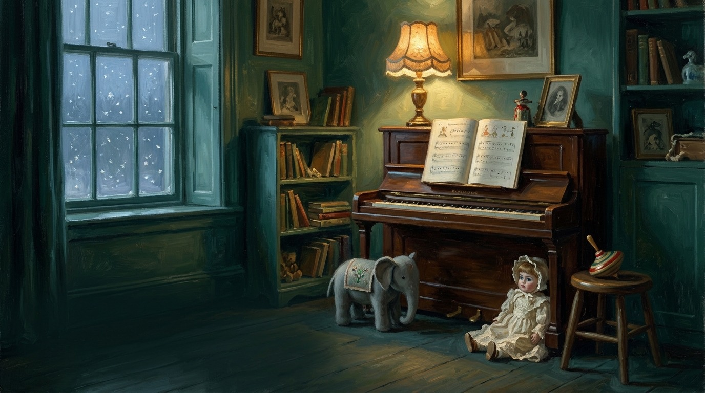
Illustrative AI image · A winter playroom
VIII
Mouvement VIII · 1906–1908
A Father’s Toy Box
Tenderness, parody and a joke at Wagner’s expense
Tempo marking: Modérément animé
Covers: Children’s Corner (1906–1908), dedicated to Claude-Emma ‘Chouchou’ Debussy
IIn October 1905 Debussy’s daughter Claude-Emma was born. Everyone called her Chouchou. She grew up in the house on the avenue du Bois de Boulogne, surrounded by toys, an English governess and a father who adored her. For her he wrote Children’s Corner, a suite of six piano pieces with English titles, published in 1908 with a dedication to ‘my dear little Chouchou, with her father’s tender apologies for what follows’.
The pieces are not easy children’s music but an adult’s affectionate view of a child’s world. Doctor Gradus ad Parnassum mocks the dull finger exercises of piano lessons, turning drudgery into quicksilver play. Jimbo’s Lullaby rocks a heavy toy elephant to sleep in the low register. Serenade for the Doll is delicate and slightly stiff, like porcelain. The Snow Is Dancing builds a whole winter from tiny repeated notes. The Little Shepherd plays a lonely pipe tune.
The last piece, Golliwogg’s Cake-walk, borrows the bouncing rhythms of ragtime and the cakewalk, American styles then fashionable in Paris. In its middle section Debussy slyly quotes the famous yearning opening of Wagner’s Tristan und Isolde and immediately undercuts it with a giggling reply. The most solemn music of the century becomes a joke in a nursery.
Chouchou was twelve when her father died. She died of diphtheria the following year, in July 1919.
In the archive: ‘Bonjour Chouchou!’ — Debussy’s postcard from Berlin, 16 December 1913
Claude Debussy, autograph postcard to Claude-Emma Debussy, Berlin, 16 December 1913, Bibliothèque nationale de France
On tour in Berlin, Debussy dashed off this card in the waiting room of Friedrichstraße station: just ‘Bonjour Chouchou!’, his initials, and the full address of the house where Children’s Corner was written. It is not a work of art, but it is the most faithful image of this chapter — the composer’s own hand reaching back to the child for whom the suite was made. It also reveals the touring life that famous composers had begun to lead by 1913, months before war would close those borders.
Listen for the contrast between the first piece — a whirlwind parody of a finger exercise — and the last, where ragtime rhythms suddenly stop for the Tristan quotation and its mocking reply. In between, The Snow Is Dancing shows how much atmosphere can come from almost nothing: a few repeated notes, softly pedalled.
The suite discussed in this chapter, dedicated to Chouchou.
Title, printed at the end: (…Children’s Corner)
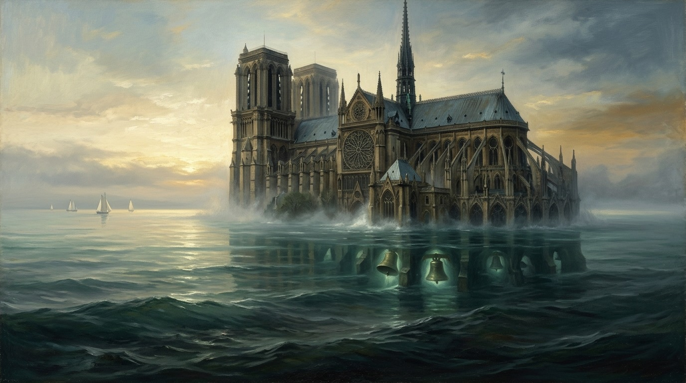
Illustrative AI image · The cathedral rising from the sea
IX
Mouvement IX · 1909–1913
Titles at the End
Twenty-four miniatures, and a ballet that came two weeks too early
Tempo marking: Profondément calme
Covers: the Préludes, Book I (1909–1910) and Book II (1911–1913), and the ballet Jeux (1912–1913)
BBetween 1909 and 1913 Debussy wrote twenty-four piano Préludes, in two books. Each is a miniature world: sails or veils hanging in still air, wind over the plain, sounds and scents turning in the evening air, a girl with flaxen hair, a cathedral rising from the sea. But in the first editions Debussy placed each title at the end of the piece, in parentheses and preceded by dots — ‘(…Voiles)’ — as if it were an afterthought, offered only once the music had done its work.
Voiles (the word can mean sails or veils) is built almost entirely from the whole-tone scale, with a brief pentatonic flurry in the middle, so that it floats without any sense of key. La cathédrale engloutie draws on the Breton legend of the city of Ys, swallowed by the sea, whose cathedral is said to rise from the waves at dawn with its bells ringing before sinking again. Debussy builds it from huge parallel chords over deep pedal notes: rising out of silence, cresting, and sinking back.
In 1913 he also finished Jeux (Games), a ballet for Serge Diaghilev’s Ballets Russes, choreographed by Vaslav Nijinsky: a tennis ball lost at dusk, a young man and two young women, a flirtation that never quite resolves. Its music is a mosaic of tiny motives in constant change. Jeux opened on 15 May 1913. Two weeks later the same company premiered Stravinsky’s The Rite of Spring, and the uproar that followed buried Debussy’s ballet for decades.
In art: Claude Monet, Rouen Cathedral, West Façade (1894)
Claude Monet, Rouen Cathedral, West Façade (1894), National Gallery of Art, Washington
Monet painted this façade more than thirty times, in different light and weather, until the stone seemed to dissolve into atmosphere. The pairing is editorial, not documented influence. Beside La cathédrale engloutie it shows a shared idea — one monumental object perceived under changing conditions — and also the difference: Monet’s cathedral stood in front of him, while Debussy’s is a legend under the sea. It reveals the 1890s fascination with series, and with perception as a process unfolding in time.
It begins with soft, open chords high and low, like bells heard through water. Listen for the great central passage where the cathedral ‘surfaces’ in loud, organ-like parallel chords over a deep bass — and then for its slow sinking back into mist.
The title refers to the submerged cathedral of the Breton legend of Ys.
Claude DebussyDirect connection
Préludes, Book I: Voiles
Almost the whole piece uses the six-note whole-tone scale, which has no leading note and therefore no pull toward a home key. Over a sustained low B-flat, figures drift like fabric in still air. In the middle a rushing pentatonic flourish blows through like a gust, and then the stillness returns.
The prelude discussed in this chapter.
Claude DebussyDirect connection
Jeux, poème dansé (1913)
Notice how rarely any idea lasts more than a few seconds. Motives appear, are interrupted, return altered and dissolve. Rather than following a melody, follow the texture — it is closer to watching light through leaves than to hearing a story.
The ballet discussed in this chapter.
Watch: Victoria Bond on Debussy’s Jeux
A short introduction to Jeux (under two minutes), published by the New York Philharmonic and featuring the composer and conductor Victoria Bond.
Title, printed at the end: (…La cathédrale engloutie)
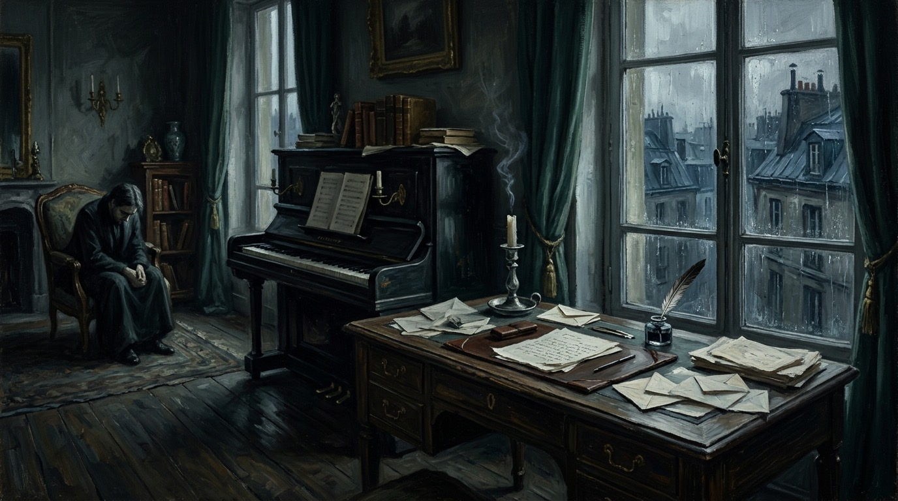
Illustrative AI image · A study in the rain
X
Mouvement X · 1890s–1914
The Undertow
Money, scandal and illness — what they shaped, and what they did not
Tempo marking: Modéré et très souple
Covers: Debussy’s relationships with Gabrielle Dupont, Lilly Texier and Emma Bardac; financial strain; the onset of cancer around 1909
TThe music often sounds serene; the life was not. Through the 1890s Debussy lived with Gabrielle ‘Gaby’ Dupont, who shared his poverty. In 1899 he married Rosalie ‘Lilly’ Texier, a dressmaker’s model. In 1904 he fell in love with Emma Bardac, a cultivated amateur singer married to a banker, and left Lilly. In despair, Lilly shot herself. She survived, but the scandal was enormous; many friends turned away from him, and the press made it a public drama.
That summer of 1904, travelling with Emma to Jersey and then to Pourville on the Normandy coast, he finished the exuberant piano piece L’isle joyeuse (The joyful island), a burst of trills, dance rhythms and blazing climax. Divorces followed, Chouchou was born in 1905, and the couple married in 1908. Life with Emma was more comfortable but far more expensive, and his letters from the mid-1900s are full of money worries. He took on criticism, conducting, teaching, publishing contracts and concert tours to keep the household afloat.
Around 1909 he began to suffer from the illness later identified as rectal cancer. Pain, fatigue and depression increasingly limited his work and travel. He kept composing — the Préludes, Jeux and the orchestral Images were all completed in these years — but a sense of time running short entered his letters.
In the archive: Atelier Nadar, Claude Debussy
Atelier Nadar, photograph of Claude Debussy (c. 1890–1910), Bibliothèque nationale de France (Gallica)
The Nadar studio, the most celebrated portrait photographers in Paris, presents Debussy in the formal manner of the day: composed, serious, dressed for the role of the eminent composer. The image shows the public figure at a time when the private life behind it was turbulent. Beside this chapter, it is a reminder of the gap between the image an artist offers and the conditions he lives in. It also reveals how photography had become the main machinery of fame by 1900.
It opens with a quivering trill and a free, almost improvised flourish, then gathers dance rhythms into one long, cumulative crescendo. This extrovert piece — so unlike the ‘misty’ Debussy of cliché — ends in a blazing climax: proof that he could write triumph when he wanted to.
Completed in the summer of 1904, during the episode described here.
Title, printed at the end: (…L’isle joyeuse)
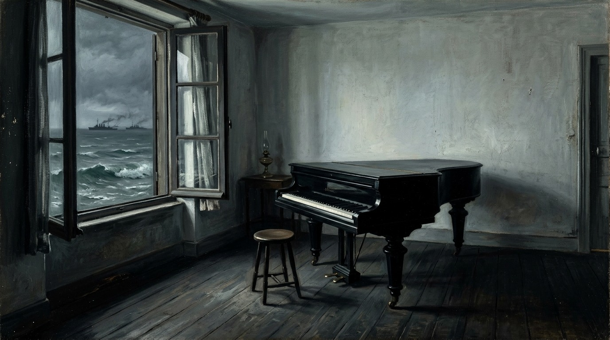
Illustrative AI image · A seaside room in wartime
XI
Mouvement XI · 1914–1918
Claude Debussy, musicien français
When outer freedom shrinks, freedom moves inside the constraint
Tempo marking: Lent, sostenuto e molto risoluto
Covers: En blanc et noir and the twelve Études (1915), the Cello Sonata and the Sonata for flute, viola and harp (1915), the Violin Sonata (1916–1917) and Debussy’s death on 25 March 1918
WWhen war broke out in August 1914, Debussy was ill, short of money and convinced he had nothing left to say. For months he barely wrote. Then, in the summer of 1915, at a villa in Pourville on the Normandy coast, something broke open. In a few weeks he wrote En blanc et noir for two pianos, twelve Études for piano and a Cello Sonata, soon followed by a Sonata for flute, viola and harp.
The new music was leaner. The Études are dedicated to the memory of Chopin, and each takes a single technical problem as its subject: five fingers, thirds, fourths, sixths, octaves, repeated notes, opposed sonorities. En blanc et noir brings the war into music: in its second movement, the Lutheran chorale Ein feste Burg stands for the invading armies and is overwhelmed by a French fanfare. Its three movements are dedicated to the conductor Serge Koussevitzky, to Jacques Charlot, a friend killed at the front, and to Stravinsky.
Debussy planned six sonatas for different instruments, in the spirit of the French eighteenth century, and signed them with a new title: Claude Debussy, musicien français. He finished three. In December 1915 he underwent surgery for his cancer. In May 1917 he played the piano in the premiere of his Violin Sonata — his last public appearance in Paris. He died at home on 25 March 1918, while German long-range guns were shelling the city. His funeral procession passed through almost empty streets.
programme
Listening
Claude DebussyDirect connection
En blanc et noir, for two pianos (1915)
Go to the second movement, dedicated to a friend killed at the front: gun-like rumbles in the bass, then a distorted Lutheran chorale that is eventually swept away by a fragment of French fanfare. It is the most openly political music Debussy ever wrote.
Composed at Pourville in 1915; the second movement quotes the chorale Ein feste Burg.
Claude DebussyDirect connection
Douze Études (1915), complete
The full set lasts about fifty minutes, so begin with the first, Pour les cinq doigts, where a child’s five-finger exercise is constantly derailed by wrong notes and bursts of virtuosity — Doctor Gradus grown up. Then try Pour les sonorités opposées, whose subject is not fingers at all but contrasting layers of sound.
Composed in 1915 and dedicated to the memory of Chopin.
Claude DebussyDirect connection
Cello Sonata in D minor (1915)
About eleven minutes long, in three short movements. Listen to the grand, almost Baroque opening gesture in the piano, answered by the cello; then the strange middle movement, where the cello plucks and slides like a guitar or a mocking street performer; then a finale of energy and sudden shifts.
The first of the three completed late sonatas, written in 1915.
Claude DebussyDirect connection
Violin Sonata in G minor (1916–1917)
Notice how short and concentrated it is, how often the violin turns between song and capricious flicker, and how the finale ends in an outburst of brilliance that sounds almost defiant from a composer who could barely leave his room.
Debussy’s last completed work; he played its premiere in May 1917.
Title, printed at the end: (…musicien français)
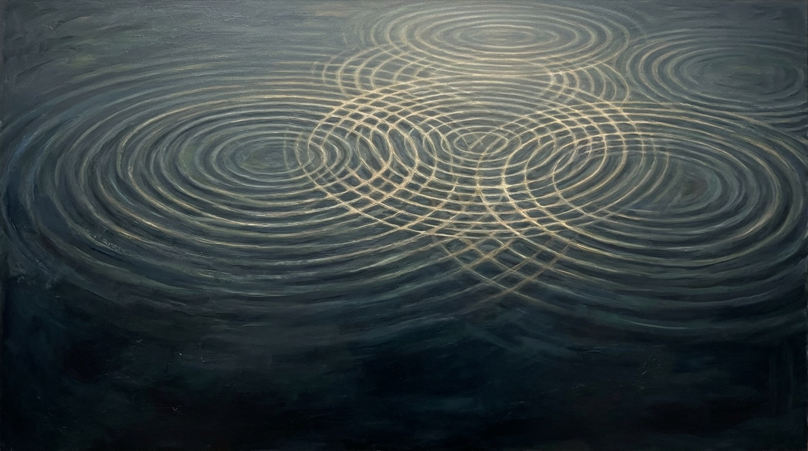
Illustrative AI image · Resonance made visible
XII
Mouvement XII · after 1918
The Deep Pattern
After 1918 · Eight lenses on one life, and a question that outlived it
Tempo marking: En s’éloignant
Covers: the whole arc, Debussy’s legacy (Stravinsky, Ravel, Bartók, Messiaen, Boulez, Ligeti and later composers of timbre) and the full eight-part deep-pattern analysis
SSeen from far away, Debussy’s life has the shape of one long movement. A poor boy enters a strict school and learns its language better than his teachers. He hears other musics — Russian, German, Javanese — and realises that the school’s language is one dialect among many. He spends the 1890s among poets, learns from them that suggestion can be stronger than statement, and writes a flute solo and an opera of silences that make Paris listen differently. In mid-life he turns sound itself into architecture: seas, reflections, clouds, a cathedral under water. Then scandal, illness and war close in, and he answers by contracting — writing études and sonatas of extraordinary concentration — before dying in a city under bombardment.
After his death, the question he had raised kept spreading. In 1920 Stravinsky wrote his Symphonies of Wind Instruments in Debussy’s memory. Ravel and Bartók absorbed his modes and layers. The young Olivier Messiaen, given a score of Pelléas as a boy, described it as a revelation and built a language of colour and suspended time on its foundations. After 1945 Boulez and his generation rediscovered Jeux, and later composers of timbre and texture, from Ligeti to the French spectralists, traced lines back to him.
This last chapter applies the full method to that arc. It moves through eight lenses — from the visible surface to the most interesting pattern that emerges — and keeps marking what is observed, inferred, hypothesised, speculated or imagined. Contradictions are treated as information, not as errors.
Debussy shifted the question from “Where is this harmony going?” to “What is this sonority doing now — and how does its memory alter what comes next?”
In the archive: Erik Satie’s photograph of Claude Debussy and Igor Stravinsky
Erik Satie (photographer), Claude Debussy and Igor Stravinsky at Debussy’s home, Bibliothèque nationale de France (record dated 1915; the photograph is often dated 1910)
Satie, Debussy’s friend, took this informal picture in Debussy’s study: the established master standing, the young Russian seated like a guest of honour. On the wall behind them hangs a Japanese wave print, widely identified as Hokusai’s Great Wave — the same image that crowned the cover of La Mer. Beside this chapter it is an image of transmission, from Debussy’s layers and mosaics to Stravinsky’s juxtaposed blocks. It also shows the cosmopolitan Paris of the 1910s, where a French and a Russian modernist could meet as equals.
Stravinsky builds the piece from blocks of sound placed side by side, interrupted and resumed rather than developed — a technique of juxtaposition with roots in Debussy’s mosaics. It ends with a slow, austere chorale: a farewell without rhetoric.
Composed in 1920 and dedicated to the memory of Claude Debussy; its closing chorale first appeared in a memorial issue of La Revue musicale.
Olivier MessiaenDirect connection
Préludes for piano: I. La colombe (1929)
Messiaen’s first published piece, written at twenty, lasts barely two minutes. Its chords are chosen for colour and float without functional pull, as in Debussy — but the harmonic palette is already Messiaen’s own. You can hear the inheritance and the departure in the same breath.
Messiaen repeatedly named Debussy, and Pelléas in particular, as a decisive early influence; these Préludes are widely heard as an homage to Debussy’s piano Préludes.
Title, printed at the end: (…Debussy)
Coda · Synthesis
What happens when listening redesigns structure
Debussy is often remembered as a composer of mist. The archives show something closer to an experimental engineer: manuscripts full of revisions, letters suspicious of every label, criticism that puts listening above doctrine. What he engineered was a new kind of coherence — music that holds together through resonance, layering, recurrence and memory rather than through the obligation to arrive home.
Across these chapters the same pattern returned at different scales. In a single chord, colour displaced function. In a single piece, recurrence displaced development. In a career, imagined elsewheres displaced institutional paths. In a life, experience came first and names came later — until, under siege, he named himself. And at each scale the opposite principle survived inside it: discipline inside freedom, form inside flux, a destination remembered even where none was promised.
That is why his most useful lesson is not ‘write whole-tone scales’, ‘imitate water’ or ‘sound Impressionist’. It is a question to carry into any field — music, science, design, a life: what assumptions about structure have become so familiar that they are mistaken for nature, and what happens when listening is allowed to redesign them?